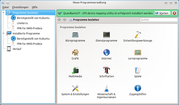
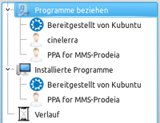
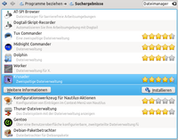
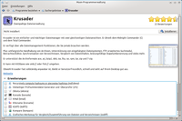

Muon Programmverwaltung
Dieser Artikel wurde für die folgenden Ubuntu-Versionen getestet:
Ubuntu 16.04 Xenial Xerus
Ubuntu 14.04 Trusty Tahr
Zum Verständnis dieses Artikels sind folgende Seiten hilfreich:
Die Muon-Programmverwaltung  ist, im Gegensatz zur Muon Paketverwaltung, eine einfachere Benutzerschnittstelle zum Installieren oder Entfernen von Programmen. Ab Kubuntu 11.10 Oneiric Ocelot gehört dieses Programm zur Standardinstallation und löst damit KPackagekit ab.
ist, im Gegensatz zur Muon Paketverwaltung, eine einfachere Benutzerschnittstelle zum Installieren oder Entfernen von Programmen. Ab Kubuntu 11.10 Oneiric Ocelot gehört dieses Programm zur Standardinstallation und löst damit KPackagekit ab.
Bei der Muon-Programmverwaltung werden die Pakete nicht nach Paketnamen aufgeführt, sondern nach dem Programmnamen, wie er zum Beispiel im Menü zu finden ist. Die Suche nach einem passenden Programm für einen bestimmten Zweck wird dadurch erleichtert, da viele größtenteils deutsch lokalisierte Informationen zur Verfügung stehen.
Was die Programmverwaltung nicht kann:
Es wird nirgendwo der zu einem Programmnamen zugehörige Paketname angezeigt. Eine Suche nach Paketnamen ist jedoch möglich.
Es wird nicht angezeigt, welche Pakete ein Programm zusätzlich installiert
Eine vollständige Entfernung von Programmen, also auch der Konfigurationsdateien, ist nicht möglich. Dafür kann man die Muon Paketverwaltung benutzen.
|  |
| Hauptansicht mit gerade installiertem Programm QLandkarteGT |
Installation¶
Ab Kubuntu 11.10 sollte das Programm unter "Anwendungen -> System -> Programmverwaltung" zu finden sein. Für andere Kubuntu-Versionen kann man es leicht nachinstallieren [1]:
muon-installer (Programm)
muon-notifier (Benachrichtigungsdaemon für Programmaktualisierungen )
 mit apturl
mit apturl
Paketliste zum Kopieren:
sudo apt-get install muon-installer muon-notifier
sudo aptitude install muon-installer muon-notifier
app-install-data-partner (optional)
mit apturl
Paketliste zum Kopieren:
sudo apt-get install app-install-data-partner
sudo aptitude install app-install-data-partner
Installation ab 14.04 geändert, ganzes Programmpaket:
muon (Programm )
mit apturl
Paketliste zum Kopieren:
sudo apt-get install muon
sudo aptitude install muon
Bedienung¶
Übersicht¶
Auf der linken Seite sind verschiedene Kategorien in einer Baumansicht aufgelistet. Auf der rechten Seite befindet sich die Navigationsleiste und ein großer Bereich, dessen Inhalt entweder weitere Kategorien oder eine Liste mit Programmen enthält.
Seitenleiste¶
|  |
| Seitenleiste |
"Programme beziehen": Hier werden alle Paketquellen aufgelistet. Je nach Auswahl werden auf der rechten Seite entweder weitere Kategorien oder alle Programme aufgelistet, die zur jeweiligen Paketquelle gehören.
"Installierte Programme": Anzeige nach Paketquellen sortiert
"Verlauf": Zeigt, nach Datum sortiert, eine Liste der letzten Installationen/Entfernungen an.
Navigationsleiste¶
Die Navigationsleiste beinhaltet jeweils einen "Vor"/"Zurück"-Schalter, eine Brotkrumen-Leiste sowie ein Suchfeld. Mit Hilfe des Suchfeldes kann man auch nach Paketnamen suchen.
Programmliste¶
|  |
| Ein markierter Eintrag |
Hat man nach einem Stichwort gesucht oder in der Seitenleiste einen Bereich ausgewählt, so werden alle gefundenen Programme aufgelistet. Bei installierten Programmen wird das Programmsymbol mit einem blauen Häkchen versehen (Im Bild: Dolphin).
Neben dem Programmnamen wird eine Kurzbeschreibung sowie die Beliebtheit des Programmes durch Sterne angezeigt.
Klickt  man auf ein Programm, erweitert sich die Zeile und man erhält Zugriff auf "Weitere Informationen" sowie die Möglichkeit das Programm zu installieren (Im Bild: Krusader).
man auf ein Programm, erweitert sich die Zeile und man erhält Zugriff auf "Weitere Informationen" sowie die Möglichkeit das Programm zu installieren (Im Bild: Krusader).
Programminformationen¶
Klickt man auf den Schalter "Weitere Informationen" werden viele zusätzliche Informationen angezeigt:
|  |
| Programminformationen |
Programmname
Kuzbeschreibung
Lange Beschreibung
Bild
Webseite des Programmprojektes
Erweiterungen: In diesem Bereich werden zusätzliche Pakete angezeigt, die die Möglichkeiten des Programms erweitern. Die hier erwähnten Pakete entsprechen den vorgeschlagenen Paketen.
Rezensionen
Pakete installieren/entfernen¶
Nachdem man in der Paketliste oder in den "Weiteren Informationen" auf "Installieren" geklickt hat beginnt die Installation nach Eingabe des Passwortes sofort. In der Paketliste erscheint beim jeweiligen Programm ein Fortschrittsbalken, der einem über den derzeitigen Verlauf informiert. Am Ende der Installation hat man die Möglichkeit, das soeben installierte Programm zu starten.
Pakete entfernen¶
Nachdem man in der Paketliste oder in den "Weiteren Informationen" auf "Entfernen" geklickt hat wird das Programm nach Eingabe des Passwortes sofort entfernt.
Paketquellen einrichten¶
Über den Menüpunkt "Einstellungen -> Software-Quellen einrichten" gelangt man zu den Einstellungen der Paketquellen.
Links¶
Intern¶
Muon Paketverwaltung - Paketmanager
Muon Aktualisierungsverwaltung - Update-Manager
Paketverwaltung
 - Übersicht und Grundlagen der Paketverwaltung
- Übersicht und Grundlagen der Paketverwaltung
Extern¶
Projektseite
bei projects.kde.orgNews
- Neuigkeiten zur Projektentwicklung
Bugtracking
bei kde.org Übersichtsseite Muon-Package Versionsübersicht in Launchpad
Bugs
- Bugreports/Fehlerberichte auf Launchpad
- Erstellt mit Inyoka
-
 2004 – 2017 ubuntuusers.de • Einige Rechte vorbehalten
2004 – 2017 ubuntuusers.de • Einige Rechte vorbehalten
Lizenz • Kontakt • Datenschutz • Impressum • Serverstatus -
Serverhousing gespendet von